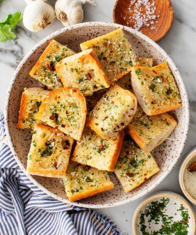

GARLIC BREAD
Prep time: 30 minutes
EUR : 2,8
Our bread we first dry it up to make it crispy, fry it both sides for less the 5 secs, add some tiny chopped garlic. Then top it up with some greeny seasons with some pitch of salt. Great choice!, You won't regret yourself.